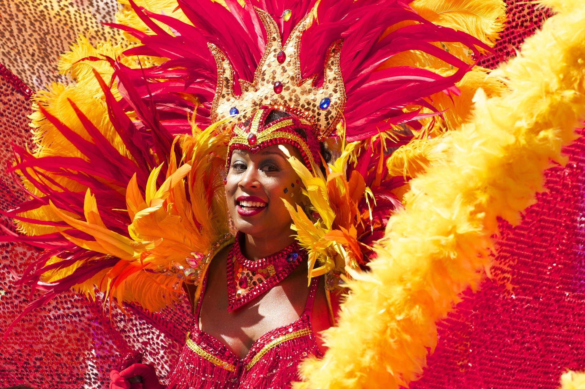
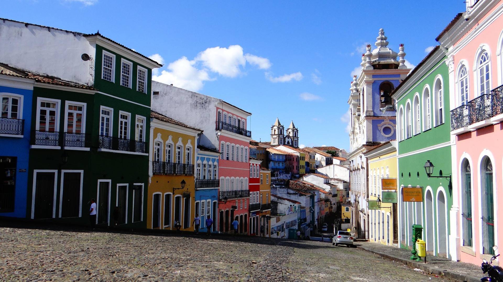

La convivencia
En muchas comunidades brasileñas es común reunirse con familiares y amigos para compartir alimentos, conversar y celebrar ocasiones especiales. La convivencia y la hospitalidad forman parte de numerosas tradiciones sociales.
Una mezcla de raíces, ritmos y tradiciones que hacen único al país.
La cultura brasileña es el resultado de la unión de diferentes pueblos y tradiciones. A lo largo de su historia recibió influencias de los pueblos indígenas, los colonizadores portugueses y las comunidades africanas, además de grupos de inmigrantes procedentes de Europa, Asia y otras regiones.
Esta diversidad se puede observar en sus celebraciones, música, gastronomía, arquitectura, creencias y expresiones artísticas. Cada región tiene características propias que contribuyen a formar la identidad nacional.

El carnaval es una de las celebraciones más representativas de Brasil.En muchas comunidades brasileñas es común reunirse con familiares y amigos para compartir alimentos, conversar y celebrar ocasiones especiales. La convivencia y la hospitalidad forman parte de numerosas tradiciones sociales.
La música está muy presente en la vida cotidiana. El samba, la bossa nova, el forró y otros estilos representan diferentes regiones e influencias culturales. El baile también es una forma importante de expresión y celebración.
Durante el año se realizan festividades religiosas, culturales y populares. Las fiestas juninas, por ejemplo, incluyen música, danzas, decoraciones, vestimentas tradicionales y alimentos típicos.

La ciudad de Salvador de Bahía es uno de los lugares donde se aprecia especialmente la influencia africana en la cultura brasileña. Su música, gastronomía, expresiones religiosas, arquitectura y manifestaciones artísticas conservan tradiciones que han pasado de generación en generación.
También destacan expresiones como la capoeira, una práctica cultural afrobrasileña que combina movimientos, música, ritmo y elementos de lucha. Es una manifestación reconocida internacionalmente.
El portugués es el idioma oficial y el más hablado del país. Brasil es el único país de América donde el portugués es la lengua oficial a nivel nacional.
Existe una gran diversidad religiosa. El cristianismo tiene una presencia importante, pero también se practican religiones de origen africano y otras creencias.
La pintura, la literatura, el cine, la danza y la artesanía son expresiones importantes de la identidad brasileña. Sus artistas han tenido reconocimiento dentro y fuera del país.
El fútbol es uno de los deportes más populares. Brasil también destaca en voleibol, fútbol sala, artes marciales y otras disciplinas deportivas.